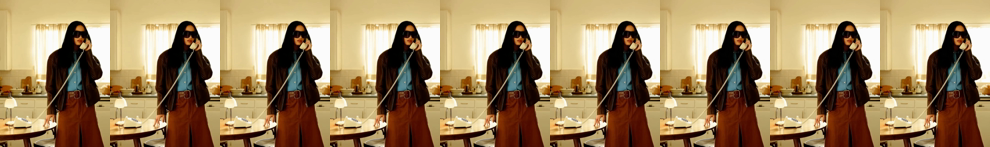
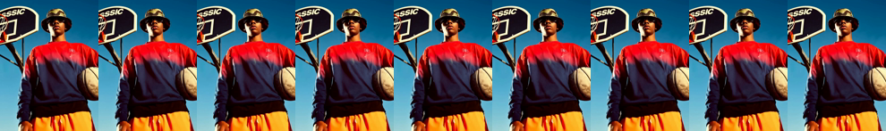
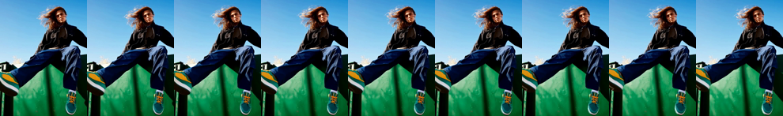
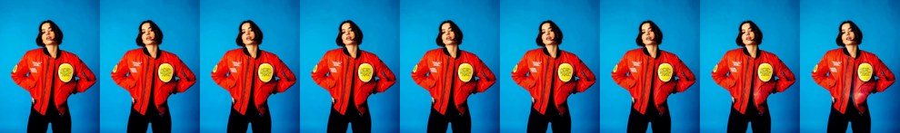
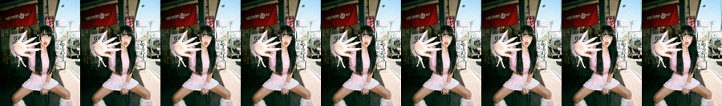
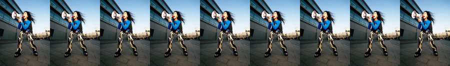
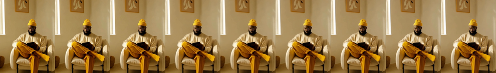
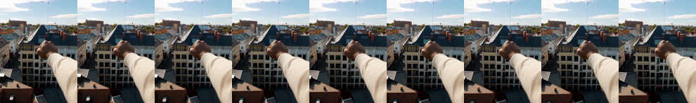

ladder2 — the clean transition eval campaign
One campaign · non-leaking prompts · specialists + generalist · one inference pass · one eval, categorized by reference-novelty × content. Status: PROPOSAL — awaiting approval. Judgment is the advisor's; facts, counts, samples, and the endpoint audit are verified against the repo on 2026-07-22.
TL;DR
"{S1}. sksz.", two-sided "{S1}. sksz. {S2}.". Audited one-by-one vs the frames: 0 transition leaks / 81 endpoints. (Token TR4NS1T10N was tested and rejected — 8 subwords + transition prior; see prompts.)%_same (fair, cross-class comparable, headline-eligible) vs %_proxy (cross/foreign/DAVIS — content-capped, ranking-only). Headline for cross/foreign = margin Δ(treat−base)+2AFC.experiments/ladder2/, one registry.jsonl; seatbelts + controls. Dossier: $LAB/misc/ladder2_redesign/DOSSIER.md.The ontology
Your key idea: an endpoint carries no transition — it's just content. So novelty lives on the transition source (the reference / specialty weights), and content is a separate axis. Endpoints are always untrained content (test-band / held-out / DAVIS), sidedness-matched — except the two fit anchors.
- seen — the exact demo was in training (specialist weights, or a generalist reference = a train-band clip of a held-in class)
- unseen — class trained, but this demo instance never was (a test-band clip of a held-in class) → new demo of a known transition
- zero-shot — a reference from a held-out class (never trained)
- same — endpoint from the transition's own class
- cross — endpoint from a different corpus class (sidedness-matched)
- foreign — endpoint from DAVIS (off-distribution real footage)
endpoint_source — the held-in-vs-held-out contrast (interference) is recoverable.| cell | ref novelty | endpoint | content | n | status |
|---|---|---|---|---|---|
| Specialist (transition baked in — no reference axis) | |||||
| SP-fit | — | train | same | ~11 | sanity |
| SP-same | — | test | same | 11→9/11 | CLAIM |
| SP-cross | — | test | cross | 11→9/11 | CLAIM |
| SP-foreign | — | DAVIS | foreign | ~6 | gated margin |
| Generalist (IC-LoRA — reference carries the transition) | |||||
| G-fit | seen (train) | train | same | ~10 | memorization ceiling |
| G-memo-probe | seen (train) | test | same | ~18→14/18 | CLAIM (new — the seen→unseen anchor) |
| G-unseen-same | unseen (test) | test | same | ~25→18/25 | CLAIM |
| G-unseen-cross | unseen (test) | test | cross | ~28→21/30 | CLAIM (+interference sub-tag) |
| G-unseen-foreign | unseen (test) | DAVIS | foreign | ~6 | gated headline-external |
| G-zs-cross | zero-shot | test | cross | 5→5/5 | CLAIM (fragile) |
| G-zs-same | zero-shot | held-out | same | 5→5/5 | exploratory (fragile) |
| G-zs-foreign | zero-shot | DAVIS | foreign | ~4 | exploratory gated |
G-memo-probe − G-unseen-same (endpoint held fixed) = demo-instance memorization; unseen→zero-shot = class generalization. That's the capability-vs-lookup distinction. Free headline the grid also enables: SP-same vs G-unseen-same on the same class = "does in-context match the specialist's baked-in ceiling?" — the cost of IC vs specialization (derived, no new gens).Rules (asserted at build)
- Novelty = f(ref) only. An endpoint's train/test/held-out split affects content-novelty, never the seen/unseen/zero-shot label. A held-out clip used as a cross endpoint under a held-in donor is
unseen-cross— its held-out-ness doesn't leak. - Strict sidedness-matching (one↔one, two↔two): endpoint sidedness == transition-source sidedness. Never a two-sided transition between one-sided endpoints (a one-sided class's end frames are its effect — verified).
- Content class-disjointness: same ⟹ endpoint_class==donor & clip≠ref; cross/foreign ⟹ endpoint_class≠donor (guards zero-shot self-reference).
- Only the two fit anchors (SP-fit, G-fit) carry train endpoints; every other cell draws from {test, held-out, DAVIS}.
- Holdout FINALIZED (split v1.2): 10 held-out classes, none specialists — transform: firelava, melt_transition, raven_transition, luminous_gaze · overlay: saint_glow, monstrosity, cotton_cloud · cover: display_transition · traverse: flying_cam_transition, live_concert. So zero-shot n=10 (bar 9/10). gas/hero/illustration returned to training; jump/seamless dropped (1 clip).
- G-unseen-same n=13 (held-in classes with ≥2 test clips, up from 8) after the split-v1.2 test-clip rule promoted earth_element_6 + money_rain_1 to test.
data/processed/transitions_std121/split_v1.2.json, sha c694659d…; rationale in SPLIT_v1.2.md): 29 held-in / 10 held-out · n_train 180 / n_test 42 · live_concert_2 quarantined (barred from ref+endpoint). Holdout re-selected deliberately by taxonomy-v2 strata — the old one was inherited verbatim from ic2. This is the latest valid split; v1.1 preserved as record.Non-leaking prompts
Builder-rendered from the conditioning; a neutral token holds the transition slot. One-sided "{S1}. sksz." · two-sided "{S1}. sksz. {S2}." (trailing punctuation stripped; unit-tested). DAVIS endpoints get ~10–15 hand-written static captions, run through the same audit.
sksz (2 Gemma sub-words, ~zero prior, 0 corpus collision), probe-gated. TR4NS1T10N was tested and rejected: Gemma-3 splits it into 8 subwords (TR·4·NS·1·T·1·0·N) — far past the ≤2 criterion — and it re-evokes "transition," which would let the base model do transition work from the token and muddy the text_floor leak-proof. Neutral short tokens keep that proof clean.Registry & structure
Sources of truth: corpus manifest + splits.json + arms.yaml + builder. registry.jsonl = atomic build output; cell labels derived from stored ref_split, endpoint_split, held_in, donor_class, endpoint_source, sided. base_key = endpoint+prompt+sided+seed (base has no novelty → dedup by input-hash). Every % row carries a %_type ∈ {same, proxy}.
experiments/ladder2/ splits.json arms.yaml build_registry.py encode_conditioning.py(shared) run_gen.py run_eval.py registry.jsonl adapters/<id>/ conds/<clip>/ davis/<seq>/(resized+captions) gens/<item_id>.mp4 scores/
Training recipe (unchanged by the ontology — inference/eval only)
rank32/α32 video-attn · lr1e-4 · 2000 steps ckpt/250 · prefix (+suffix iff two-sided)
rank32/α32 attn+FFN · lr2e-4 · 5000 steps ckpt/500 · reference-concat clean/t=0/loss-excluded · 32 held-in
encode_conditioning.py (trainer+inference) · inline ID/OOD/control validation @250 steps · fixed-ckpt selection · val clips carved from train · test-band never generated until eval.Sample gallery — playable
Real clips/captions; cards illustrate cells (reference-novelty is orthogonal — a card's ref may be train or test). Rendered prompt · actual first-9/last-9 filmstrips · endpoint clip · reference. Videos play when served from the repo root. No outputs — nothing trained.
① SP-same specialist · one-sided · test endpoint
NEW: A woman with long black hair and large sunglasses stands in a warm-lit kitchen … holding a white telephone receiver to her ear. sksz.

② SP-same two-sided · test endpoint


③ SP-cross donor color_rain → recipient animalization_0 (one↔one matched)

④ G-memo-probe generalist · seen (train) demo → test endpoint, same class (the seen→unseen anchor)
⑤ G-unseen-cross generalist · two-sided donor shadow_smoke → recipient water_bending_3 (two↔two matched — the fixed sample)


⑥ G-zs-same generalist · zero-shot held-out class · two-sided · in-context only


⑦ G-zs-cross generalist · held-out donor illustration_scene → held-in recipient color_rain_0 (one↔one)
⑧ G-unseen-foreign corpus donor shadow_smoke → DAVIS endpoints (blackswan → rhino) gated headline
text_floor (not shown): same prompt, no conditioning/adapter/reference — if it sits near the pool floor (not the old 63–70%), the leak is gone.
Endpoint QA & DAVIS pick — one-by-one, 6 agents
| finding | clips | action |
|---|---|---|
| Clean descriptions | 81/81 | use as-is |
| Minor accuracy nits (small detail, mostly sunset-tint colors) | shadow_3, firelava_4, gas_transformation_4/5 | keep; optional touch-up |
| Anchor contamination — conditioning window already mid-effect | polygon_8, raven_transition_2, giant_grab_3 (portal_0/4 borderline) | clean-anchor pre-flight check; exclude effect-onset-immediate clips (all polygon + raven clips; giant_grab_3) from the clean-endpoint role |
DAVIS pick (distinctive foreground object)
All 90 sequences screened; ~35 keep. Cleanest singles: car-turn, lucia*, hike*, blackswan, tennis*, bear, mallard-water, kite-surf*, surf*, snowboard*, kid-football*, elephant, breakdance-flare*, rhino, car-shadow, rollerblade* (* human).
{lucia, mallard-water, car-turn} · two-sided pairs {(blackswan→rhino), (tennis→snowboard), (bear→elephant)}. Needs hand-written captions + 854×480→480×640 resize.How many generations
| priority | cells | gens |
|---|---|---|
| P0 (must) | SP-same · SP-cross · G-unseen-same · G-unseen-cross · fit anchors · base · text_floor — full in-distribution capability + reference-dominance; no held-out ckpt, no DAVIS | ~470 |
| P1 (high) | G-memo-probe (validates your 3-tier) · G-zs-cross — needs held-out checkpoint | ~110 |
| P2 (gated/exploratory) | SP-foreign · G-unseen-foreign · G-zs-foreign (behind DAVIS pilot gate) · G-zs-same (fragile) · interference balancing | ~150 |
| grand total | ~280 treatment items + base (input-hash dedup) + text_floor 24 | ~730 |
(treatment−base) v4 margin toward the cell's GT pool; one-sided sign test α=0.05 (n=5→5/5, n=11→9/11, n=18→14/18, n=25→18/25).Evaluation & metrics
treat − base on the same (content, ref, sidedness) input + 2AFC. Base eats the same content-cap, so it cancels — a low DAVIS % is harmless to the claim.app_ref is pairwise (gen vs one reference). The pool score = mean over the class pool = closeness to the class as a whole (mean-of-pairwise, not centroid). The % = pool / class-ceiling; the ceiling carries the same class-spread penalty so it cancels — only %_same is cross-class comparable, and >100% is legal. Stats on raw; % is presentation.Seatbelts & controls
| guard | prevents |
|---|---|
| unique item_id | id collision |
| prompt rendered, no outcome verbs (audit passed) | prompt leak |
| split disjointness + no zero-shot item in the generalist train manifest + DAVIS ∉ any train manifest | contamination |
| keyed-join exact match, missing = hard error, no folds | the C4/C8 verdict flip |
| mask = f(conditioning); unit-tested on two-sided cross | foreign mis-mask |
one shared encode_conditioning() + train-start smoke assert | suffix bleed |
| cell-derivation asserts: novelty=f(ref_split,held_in) only · content class-disjointness (incl. zero-shot self-ref guard) · only fit anchors carry train endpoints · %-typing firewall | taxonomy drift / mislabeled cells |
| clean-anchor pre-flight (morph-profile change in the conditioning window below threshold) | mid-effect endpoints (polygon/raven/giant_grab) |
run_grid_inference supports nullable adapter + optional ref, so likely fine — but smoke-test it).LoRA-health checklist
clip counts · train/val/test disjoint · captions leak-free (done) · no
_dup · IC pairs symlinked · mask frames right · (F−1)%8==0 · clean-anchor check · decode 5 tuples · rank/α/lr per recipe · bf16 · max_grad_norm>0 · grad-ckpt onloss descending (IC~0.18) · per-σ bucket · concept emerges (c2v ~250) · OOD not near-copying ref · control no drift · ref-swap RMS≠0 · raw appearance not normalized · flags-off≡base bit-exact · config+commit snapshot · resume-safe · W&B live
Plan & timeline
- Build (no GPU). splits + shared encode + builder + seatbelts + render_prompt tests + token probe + DAVIS captions/resize + base-accepts-reference smoke test → fill counts/probe here → approval gate.
- Pilot · ½ day. 2 specialists (one/two-sided) → inline validation @500 vs health bars.
- Fleet. 9 more specialists + generalist. exp_073/074 read as they land.
- DAVIS pilot gate (16 gens) → claim-bearing or showcase.
- Generate → score → analyze (P0→P1→P2, base-dedup, ≥2 seeds, reference-use control on held-in cells) → propose F-blocks.
Decisions I need
- The ontology (reference-novelty seen/unseen/zero-shot × same/cross/foreign; always-test endpoints; the added G-memo-probe so seen→unseen is clean)?
- % typing (%_same headline-eligible, %_proxy ranking-only incl. DAVIS "to see") — good?
- ~730-gen budget & P0/P1/P2 priority — good, or trim/expand?
- Anchor finding: add the clean-anchor check + skip effect-onset-immediate clips (polygon/raven/giant_grab) — agree?
- Token
sksz(TR4NS1T10N rejected) · seatbelts + the two controls · bleed-fix fold-in — all OK?
On your yes, I build step 1 (no GPU, incl. the base-accepts-reference + reference-use control checks) and return with probe results + exact counts for the pilot go.
ladder2/REFERENCE.html · updated 2026-07-22 · single source of truth = registry.jsonl; dossier = $LAB/misc/ladder2_redesign/DOSSIER.md. Videos resolve when served from the repo root. Nothing trained or generated yet.